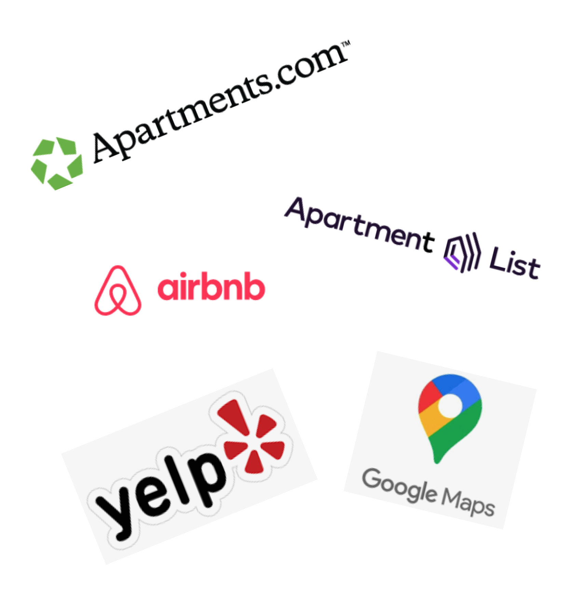
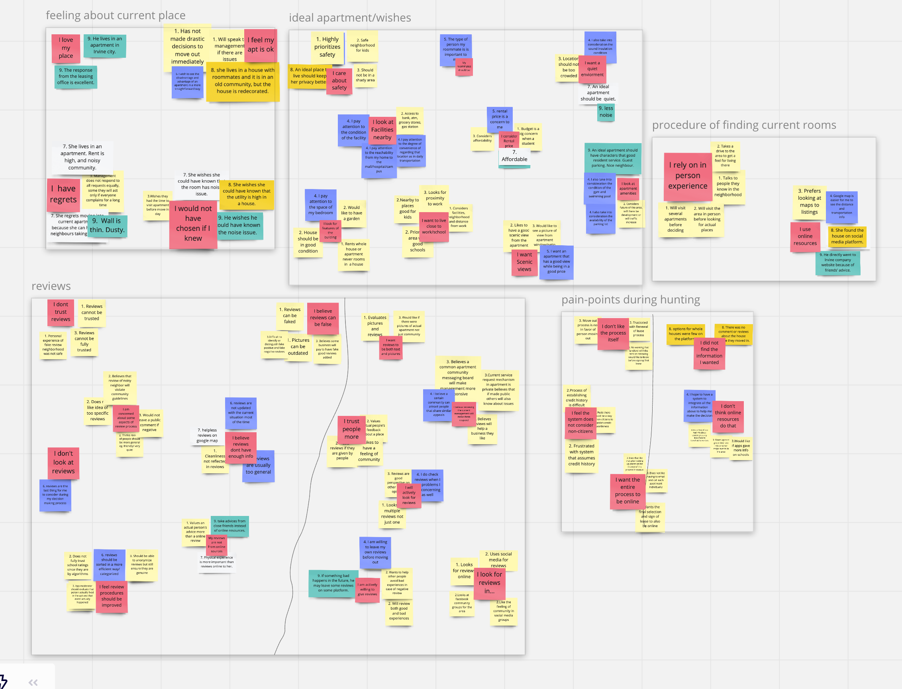
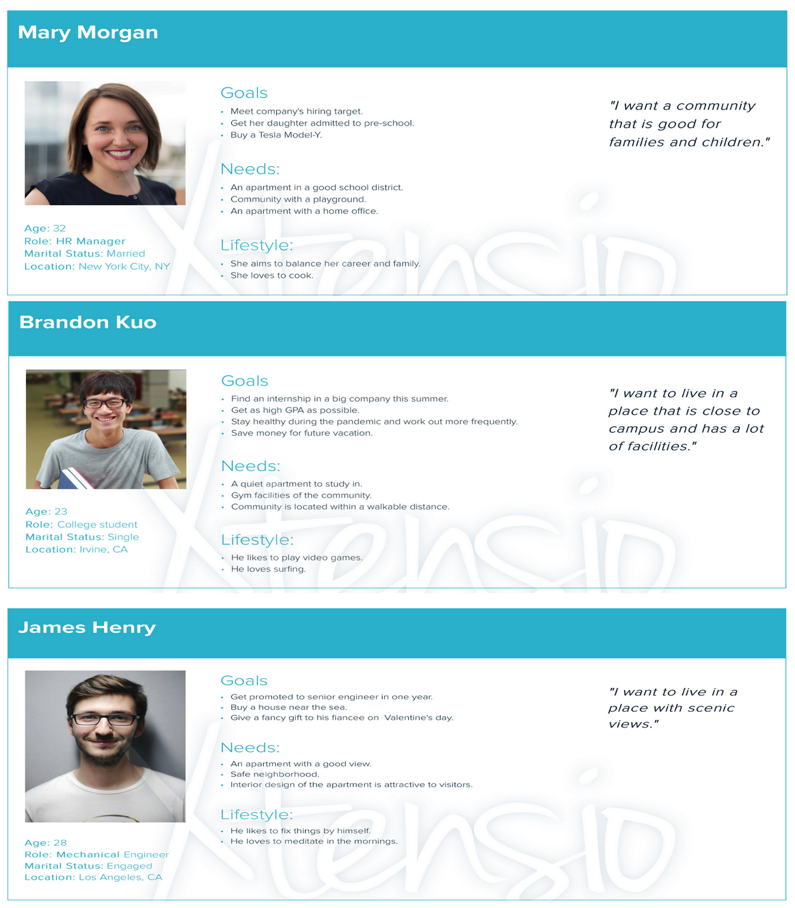

Apartment hunting is a stressful process for most folks, they need to consider their budget, proximity to work or school, safety of the neighborhood, amenities, leasing period etc.
Despite their best efforts people often feel unhappy with their final decisions.
This is because even though information about houses and apartments is everywhere on the internet, there isn't a place that allows people to really get to know the experiences of previous renters.
We wanted to help out by designing a system that helps users in the process of searching for apartments by providing them with an accurate picture of what living there is really like.
Competitor Analysis
WE STARTED BY DOING A COMPETITOR ANALYSIS TO UNDERSTAND THE EXISTING MARKET
Apartments.com - Allows renters to search for places to rent and view amenities but there is no mechanism to see what it is like to live there.
Apartmentlist.com - Similar to the previous website with slightly more details.
Airbnb - Pretty comprehensive review mechanism but not really meant for long-term living spaces.
Yelp.com - Several reviews about apartment communities but significant issues when it comes to whether the reviews can be trusted.
Google Maps - Good photo resolution and has reviews but too general.
This analysis showed that there was a market for our idea especially if we can include a good mechanism for reviews that can be trusted by the user.

User Research
Before starting to design we interviewed nine individuals who were potential users of our product, we wanted to know what their real needs and motivations were.
These nine individuals fell into three broad categories students, working professionals and families.
Our aim during the interviews was to answer the following questions:
What is the typical procedure renters use to find new apartments?
What do renters say are the most frustrating aspects of this process?
How do renters feel about reviews of the apartments?
After the interviews we followed the process of affinity diagramming to determine whether there were any common patterns or themes among the interviewees. The collaborative whiteboard we used for diagramming is coming up soon.
Interview Insights
What we found:
Users have a priority list and search for places that satisfy them.
What these priorities are vary based on the demographics.
Most people search online for apartments to rent.
Users felt reviews are good, but reviews cannot always be trusted.

Personas
Based on the interviews and affinity diagrams we came up with these personas to serve as helpful guides during the user research process.
Consider Brandon’s quote : “I want to live in a place that is close to campus and has a lot of facilities”. Brandon is also concerned about safety.
This inspired our User Story :
“As a student I want to see only genuine reviews by actual people so that I can trust what is said.”
Which led to our app feature :
“Given that a user wants to leave a review when they are on the leave a review page then include address proof upload option.”

Phase 1 Design
This was our initial design, developed after competitor analysis and user research.
Basic design with grey colored placeholders and minimal details.
User Evaluation
We presented the initial wireframe to six users and asked them to perform simple tasks such as clicking through and finding certain pages or telling us what they thought would happen based on a certain button click. This would help us understand the issues users have with the current design.
Phase 2 Design
Updated design after user evaluations.
More descriptive elements were added and
additional sections were introduced.
Font-awesome icons were added for greater user recognition.
A back button was added so users could go back to the previous page.
Phase 3 Design
We then used the previous design as a model for a High Fidelity version.
Here a simple color palette was used with realistic images for a natural feel.
Heuristic Evaluation
We then used Nielsen's 10 Heuristics to evaluate the high fidelity design. This helped us to recognize usability issues like the user not knowing the system status, not being able to recover from errors or inconsistencies in the internal design.
Phase 4 Design
Final design based on the Nielsen's 10 Heuristics evaluation.
We changed the design layout and added functions to improve the usability of our app.
There are elements that allow the user to edit and delete. As well as descriptions that allow the user to know the current status.